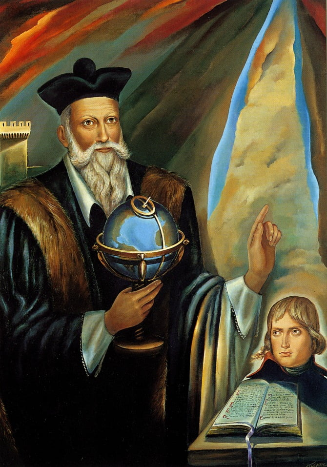
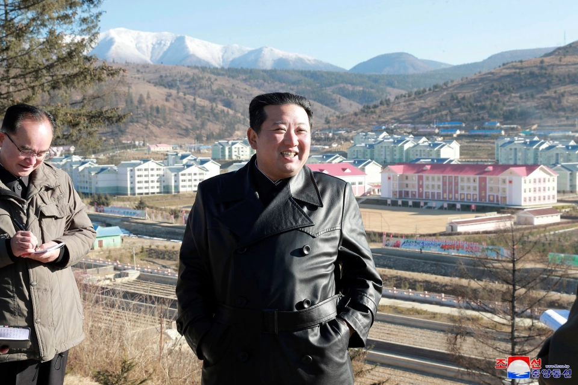
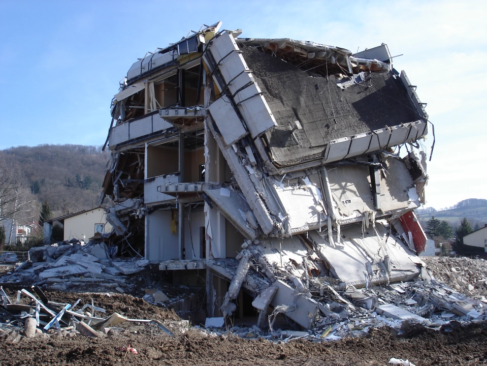
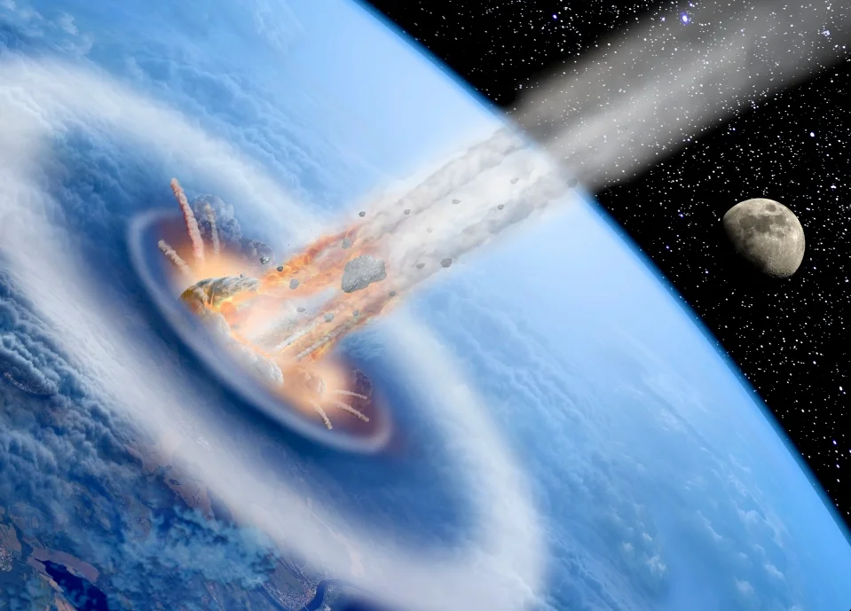

დიქტატორის სიკვდილით დაწყებული, კატალკიზმებით დასრულებული. როგორც ენთუზიასტები ირწმუნებიან ნოსტრადამუსმა 2022 წლისთვის ავბედითი მოვლენებუ იწინასწარმეტყველა.
ფრანგმა ასტროლოგმა და ფილოსოფოსმა 6,338 წინასწარმეტყველება დაწერა.
ნოსტრადამუსის მრავალი წინასწარმეტყველება სწორად იყო ინტერპრეტირებული, მათ შორის იყო ადოლფ ჰიტლერის აღზევება, საფრანგეთის რევოლუცია, მეორე მსოფლიოს ომი, 11 სექტემბრის ტერაქტი, ატომური ბომბის გამოგონება…
როგორც ზოგიერთს სწამს, ნოსტრადამუსმა 2020 წელს კორონა პანდემიის დაწყებაც იწინასწარმეტყველა.
ფრანგი ასტროლოგი 1566 წლის 2 ივლისს გარდაიცვალა.
თუმცა, მისი წინასწარმეტყველებები კვლავაც აოცებს მის მკვლევარებს და მიმდევრებს
გთავაზობთ წინასწარმეტყველებებს, რომლებიც წარმოადგენს ნოსტრადამუსის მიმდევრების მიერ მისსავე წიგნზე დაყრდნობით გაკეთებულ ინტერპრეტაციებს, 2022 წლის შესახებ.
ნოსტრადამუსი
წინასწარმეტყველებების ინტერპრეტატორების მიხედვით 2022 წელს ჩრდილოეთ კორეის დიქტატორი კიმ ჩენ ინი მოკვდება.
Centuria IV-ს მე-14 ოთხტაეპედში ნოსტრადამუსი წერს: “პირველი პირის მოულოდნელი სიკვდილი / მოიტანს ცვლილებებს და სხვა პერსონაჟს სამეფოს სათავეში.”
ნოსტრადამუსის ენთუზიასტები სპეკულირებენ რომ საუბარია კიმ ჩენ ინზე, მისი წონის კლების და გამუდმებული ჭორების მისი ჯანმრთელობის მდგომარეობის შესახებ.
ჩრდილოეთ კორეის ტირანი მმართველი ოქტომბრის შემდეგ არ გამოჩენილა – რაც ბოლო 7 წლის მანძილზე მისი ყველაზე ხანგრძლივი გაუჩინარებაა.
ის 15 ნოემბერსაც ვიხილეთ, თუმცა ამ ფაქტმა კიდევ უფრო გაამყარა დიდხნიანი ეჭვები მისი ჯანმრთელობის გაუარესების შესახებ.
კიმ ჩენ ინი
ვარაუდობენ, რომ Centuria III-ის მესამე ოთხტაეპედი 2022 წელს დიდ მიწისძვრას წინასწარმეტყველებს იაპონიაში.
გასული წლის 7 ოქტომბერს იაპონიაში 5.9 ბალიანი მიწისძვრა მოხდა, რომლის ეპიცენტრიც კანტოს რეგიონში იყო.
მიუხედავად იმისა, რომ მიწისძვრას მინიმალური ზიანი მოჰყვა, ის ყველაზე მძლავრი იყო, რაც 2011 წლის 11 მარტის მიწისძვრის შემდეგ იაპონიას დაატყდა თავს, რომელმაც ტოჰოკუს რეგიონი გაანადგურა.
მიწისძვრა იაპონიაში
ნოსტრადამუსის ერთ-ერთი წინასწარმეტყველება ევროპაში მოსალოდნელი ომის შესახებ, ზოგიერთი ინტერპრეტაციის მიხედვით პირდაპირ მიუთითებს პარიზზე.
სექციაში ნათქვამია: “დიდი ქალაქის გარშემო მეომრები იქნებიან.”
საფრანგეთის დედაქალაქის ქუჩებში ქაოსური სურათი გასულ წელსაც ვიხილეთ, კოვიდ რეგულაციების წინააღმდეგ მოსახლეობის საპროტესტო გამოსვლების დროს
და 2015 წელს პარიზი აისისის ტერორისტების თავდასხმის ობიექტი გახდა, რომლებმაც 130 ადამიანის სიცოცხლე იმსხვერპლეს.
ეს იყო ყველაზე სისხლიანი შეტევა საფრანგეთის წინააღმდეგ, მეორე მსოფლიო ომის შემდეგ.
ინტერპრეტაციის მიხედვით მსოფლიოში გახშირდება შეიარაღებული კონფლიქტები, რაც ბუნებრივია გამოიწვევს საკვების პრობლემებს.
და მოიმატებს მიგრანტების რაოდენობა.
და როგორც ექსპერტები ხსნიან, ნოსტრადამუსი ევროპის სანაპიროებთან მომდგარ უამრავ მიგრანტზე საუბრობს.
არსებობს მოსაზრება რომ ნოსტრადამუსი ევროკავშირის დაშლას წინასწარმეტყველებს – რაც გამყარებულია ფაქტით, რომ 2016 წელს ბრიტანეთმა ბრექსიტს დაუჭირა მხარი.
ინტერპრეტატორების მიხედვით ბრიტანეთი მხოლოდ დასაწყისი იყო და ევროკავშირი 2022 წელს საერთოდ დაიშლება.
უკვე დაიწყო საუბარი, იმის შესახებაც რომ პოლონეთი იქნება პირველი ქვეყანა, რომელიც ბრიტანეთის გზას გაყვება.
2021 წლისთვის ერთ-ერთი ყველაზე ცნობილი წინასწარმეტყველება ასტეროიდის ჩამოვარდნას უკავშირდებოდა.
“ცეცხლს ვხედავ ციდან, რომელიც ჩამოვარდება.” – წერს ასტროლოგი.
2021 წელს ასტეროიდმა 2021GW4 დედამიწას ახლოს ჩაუარა. ასტეროიდი დიდ საფრთხეთ არ იყო აღქმული ნასას მხრიდან, რაც მთლიანად არ შეესაბამება იმ დრამატულობას, რასაც ნოსტრადამუსი იჩენს.
